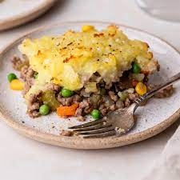

Shepherd's Pie

Shepherd's Pie
Origionally an english dish, Shepherd's Pie has become a favorite amongst
my husband AND my brother. Depending on how you like it, this is another ajustable
dish you can curate to any diet regardless of restriction. Its all in the layers.
Ingredients
- 1 lb Ground Meat
- 1 lb Potatos
- 1 can Cream Corn
- 1 can Carrot
- 1 can Peas
- 1 Pk brown gravy
- 1 Cup Water
- Butter (optional)
Directions
- Brown meat and boil potatos. Set aside.
- Pre heat oven to 375℉
- In 8x13 cassarole dish flatten out ground meat.
- Combine 1 cup water with 1 pk brown gravy and cover the flattened meat
- Layer cream corn, carrot, then peas
- Mash boiled potatos and fill the rest of the cassarole dish
- With fork, scrape the tops of the potato (for the crispies)
- bake uncovered 30-45mins or until golden brown on top